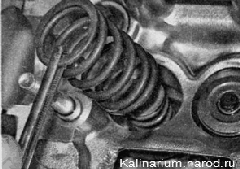

Маслосъемные колпачки двигателя 1,6i - замена
Для выполнения работы потребуются:
— оловянный пруток;
— магнит;
— пинцет;
— съемник маслосъемных колпачков;
— оправка для запрессовки колпачков;
— рассухариватель.
Снятие
1. Снимаем распределительный вал.
2. Магнитом вынимаем из посадочных мест в головке блока цилиндров толкатели с регулировочными шайбами.
3. Чтобы установить толкатели на прежние места, маркируем их или раскладываем в порядке расположения в двигателе.
4. Выворачиваем свечу цилиндра, у клапана которого заменяем маслосъемный колпачок.
5. Вставляем оловянный пруток в свечное отверстие, так чтобы его конец оказался под тарелкой соответствующего клапана.
6. Устанавливаем приспособление для рассухаривания клапанов на шпильки головки блока цилиндров.
7. Чашку приспособления упираем в тарелку пружины.
При выполнении следующей операции не поцарапайте рассухаривателем стенки посадочного отверстия толкателя в головке блока цилиндров.
8. Надавив на ручку рассухаривателя, сжимаем пружины клапана.
9. Удерживая пружины сжатыми, пинцетом извлекаем два сухаря.
10. Плавно отпускаем пружины и снимаем рассухариватель.
11. Пинцетом снимаем тарелку пружины.
12. вынимаем наружную...
...и внутреннюю пружины клапана.

13. Устанавливаем захват съемника на маслосъемный колпачок.
14. Спрессовываем колпачок.
15. При необходимости вынимаем опорную шайбу пружин.
Установка
1. Устанавливаем опорную шайбу пружин (если она была снята).
2. Наносим чистое моторное масло на рабочую кромку нового колпачка и стержень клапана.
3. Надеваем на стержень клапана специальную пластмассовую оправку (входящую в комплект новых колпачков) так, чтобы она закрыла проточки на стержне.
4. Надеваем колпачок на стержень клапана.
При отсутствии оправки колпачок следует надевать очень аккуратно, чтобы не порезать кромку об острые кромки проточек. Перед установкой с колпачка можно снять пружинку.
5. Легкими ударами молотка по оправке напрессовываем колпачок на втулку клапана.
Совет
Для напрессовки колпачка можно использовать торцовый ключ с глубокой двенадцатигранной головкой на 11 мм или шестигранной головкой на 12 мм.
6. Снимаем пластмассовую оправку.
7. Устанавливаем пружины, тарелку пружины и сухари в последовательности, обратной снятию.
8. Аналогично заменяем маслосъемные колпачки остальных клапанов первого и четвертого цилиндров (их поршни находятся в положении ВМТ), после чего поворачиваем коленчатый вал двигателя на 180° и заменяем колпачки клапанов второго и третьего цилиндров.
9. Устанавливаем снятые детали в последовательности, обратной разборке, после чего регулируем натяжение ремня привода ГРМ.